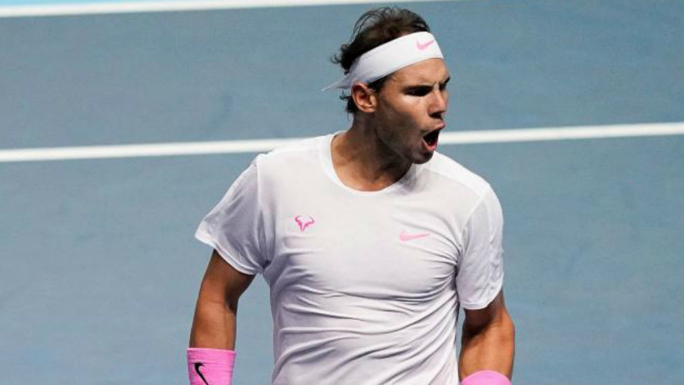

Rafa Nadal es seguramente el mejor tenista de la historia de España, y uno de los mejores de la historia de este deporte. El balear ha conseguido hasta ahora 19 títulos de Grand Slam. En la actualidad, solo le supera el suizo Roger Federer. Hay que tener en cuenta, que el español tiene ya más de 33 años, pero con el 2019 que ha hecho, se diría que tiene cuerda para mucho más.
Este no es el único record que posee el español, pues es también uno de los tenistas que más torneos de categoría 1000 (Masters) posee en la historia.
Como vemos, el manacorense ha conseguido más títulos con diferencia en la tierra batida parisina, pero también ha logrado 4 campeonatos en el torneo de Grand Slam estadounidense y 2 en la hierba de Wimbledon y terminando un triunfo en aquel memorial partido contra Roger Federer en el Open de Australia.